3단계: 성수동 대세 팝업 10선 리포트
Seongsu 10 Brand Popups & Real Photos
실제 탐방 현장에서 촬영한 생생한 사진들과 함께 정리했다.
대기업 마케터들이 설계한 오프라인 설계의 트렌드 인사이트와 내돈내산 영리한 경험담의 요약본.
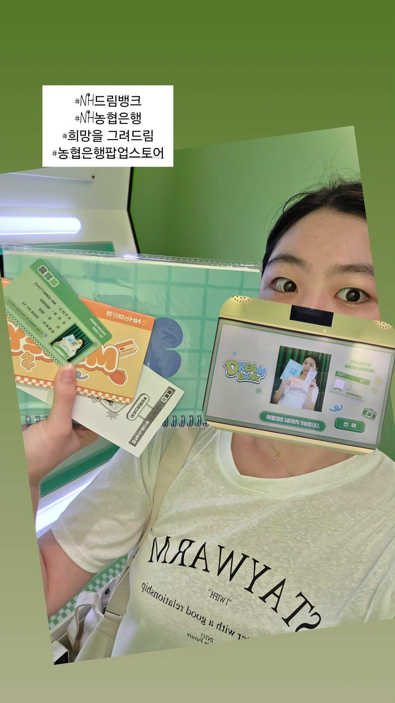
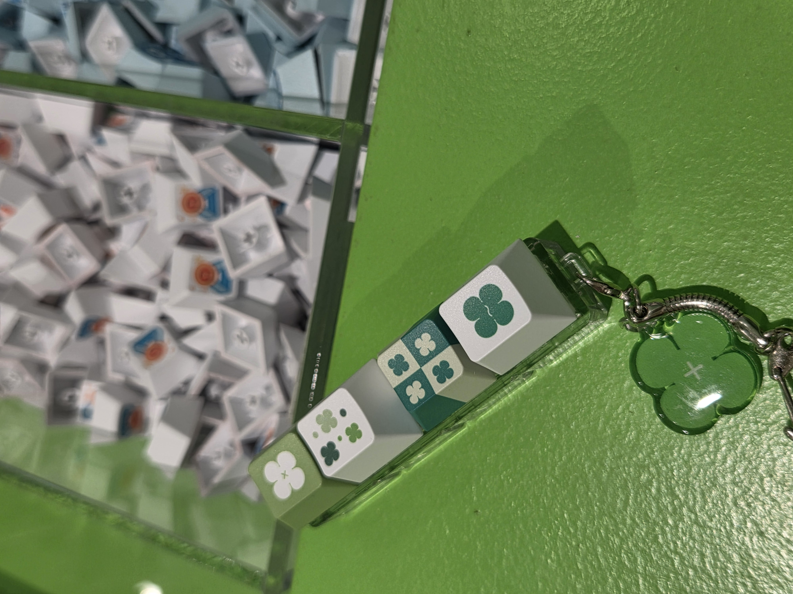
1. NH농협은행 드림뱅크 팝업스토어
현장에서 팝업 전용 모임통장을 즉석 개설하며 참여를 개시했다. 커다란 버튼 두 개를 사정없이 내리치며 정해진 시간 내 게이지를 완벽히 채우는 협동 챌린지 미션에 가볍게 성공해 실용적인 노트를 확보했다. 통장 개설 덕에 이색적인 가상 아이디 카드도 발급받았다. 마지막 체험 완료 후, 조립해서 완성한 네잎클로버 키캡은 키보드에 끼워 보니 타이핑할 때마다 소리가 짤깍짤각 짱좋음!
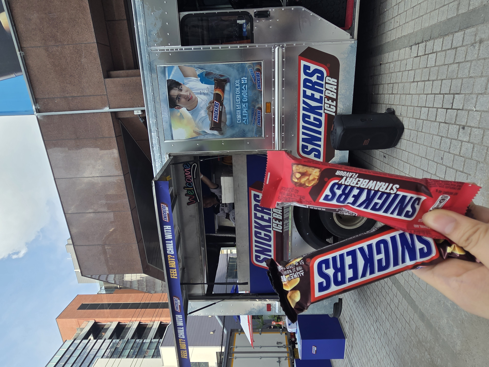
2. 스니커즈 무빙팝업 - 아이스바 트럭
원래 농협은행에 들어가기 전 지도 검색을 통해 스니커즈 트럭 장소를 찾아갔으나, 지정된 자리에 트럭이 보이지 않아 일단 깔끔하게 포기했었다. 그런데 다른 팝업스토어들을 즐겁게 클리어하고 맥(MAC)으로 걸어서 넘어가던 중간 길목에 떡하니 정차 중인 트럭을 우연히 대발견했다! 인스타 스토리에 인증샷을 즉시 게재해 달콤하고 차가운 딸기 초코 아이스바 2개를 획득했다. 맥 대기줄에서 시원하게 까먹으며 훌륭한 에너지 충전 수단으로 활용했다.
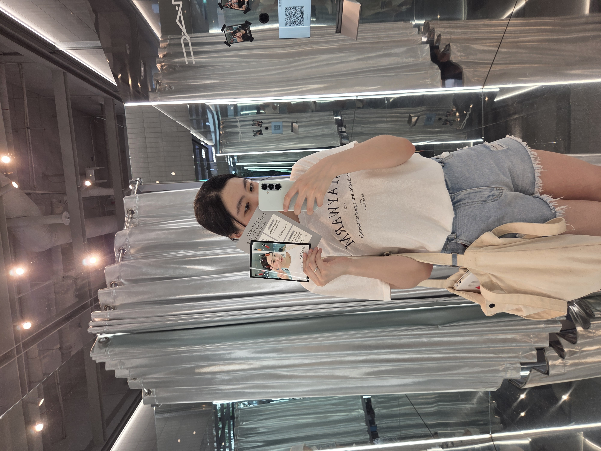
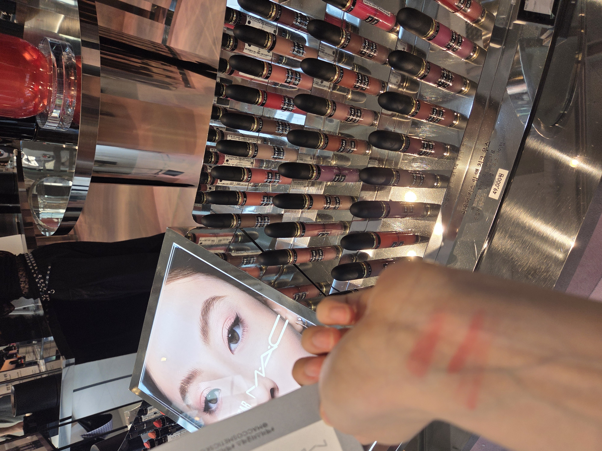
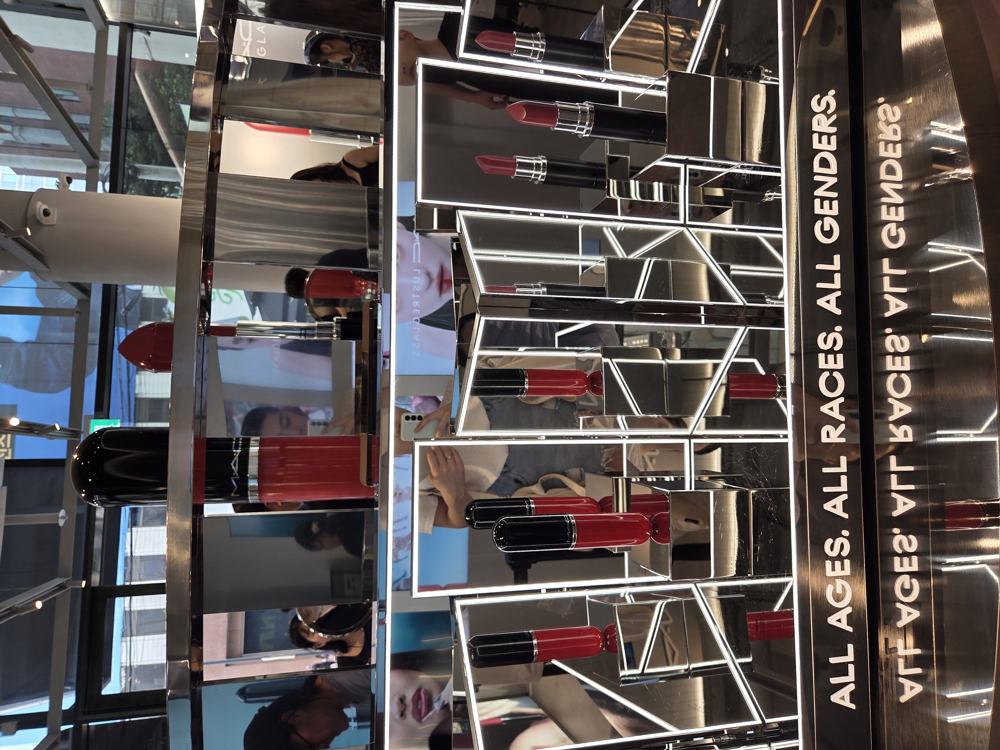
3. 맥(MAC) in 트렌드팟 성수
올리브영 메가프라자 내부 트렌드팟 구역의 맥 행사장에 들어갔다. 카카오 플친 추가와 공식 회원가입을 마치고, 손등에 촉촉한 색감의 립글로스를 취향대로 직접 매치해 테스트했다. 현장에 구비된 아기자기한 카드 짝 맞추기 퀴즈 미션을 통과해 럭키드로우 토큰을 손에 쥐었다. 정품을 꿈꾸며 가벼운 기대로 돌렸으나 소소하게 4등이 뽑혀 하이퍼 리얼 세라 크림 샘플을 유용하게 받아왔다.
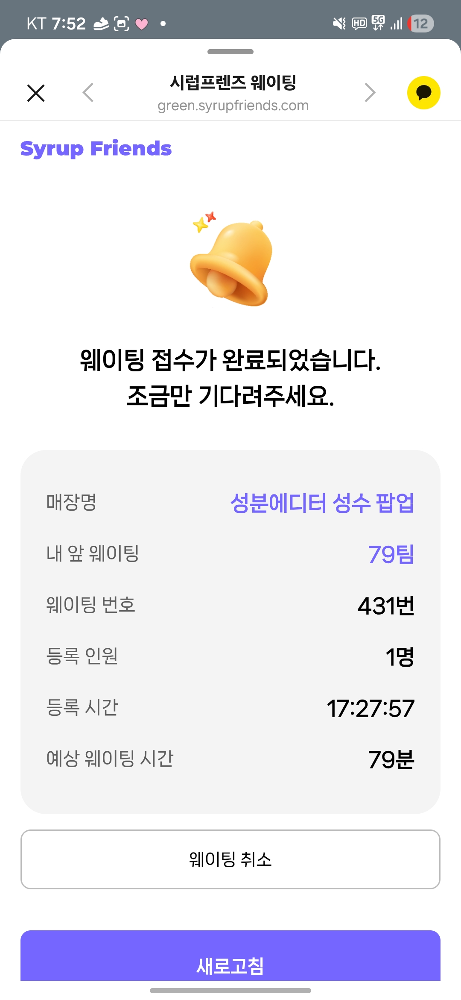
4. 성분에디터 그린토마토 마켓 팝업
이날 마주했던 가장 험난했던 성수동 웨이팅의 실제 상황이었다. 싱그러운 과일 상자 디자인으로 기대를 자극했으나, 오후 늦게 웨이팅 태그를 걸자마자 내 대기번호는 **431번**으로 찍혔다. 실제 내 앞 대기자가 **300팀을 가볍게 초과**했고, 모바일 예상 대기 시간이 **무려 361분(6시간)**으로 떴다! 좁은 골목길에서 361분을 고단하게 마냥 버릴 수는 없으니 지체 없이 1초 만에 취소 처리를 누르고 다음 탐방 리스트로 유연하게 노선을 틀었다.
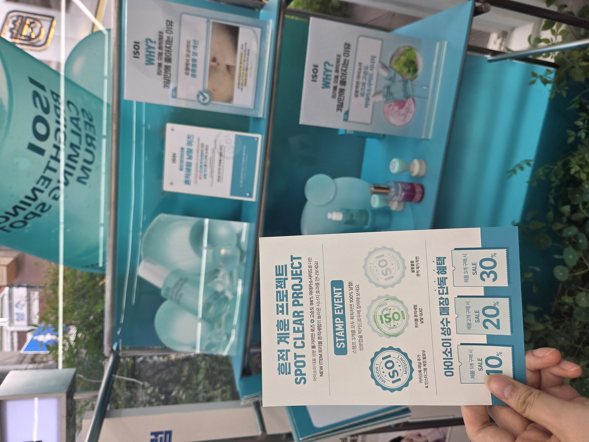
5. 아이소이 성수 팝업스토어
건물 외부 부스에서 시원한 자연산 붓기차를 편안히 시음할 수 있게 제공했다. 갈증을 부드럽게 풀고 내부의 "흔적 계훈 프로젝트" 스탬프 팸플릿 투어를 본격 개시했다. 카카오 플친 추가와 보습 성분 관련 정답 퀴즈 맞추기, 그리고 로즈 장벽 세럼 제품들을 야무지게 시연했다. 확보한 도장 3개로 유쾌하게 럭키드로우에 참여해 콤팩트한 불가리안 로즈 장벽 트래블 체험 샘플 묶음을 기분 좋게 챙겼다.
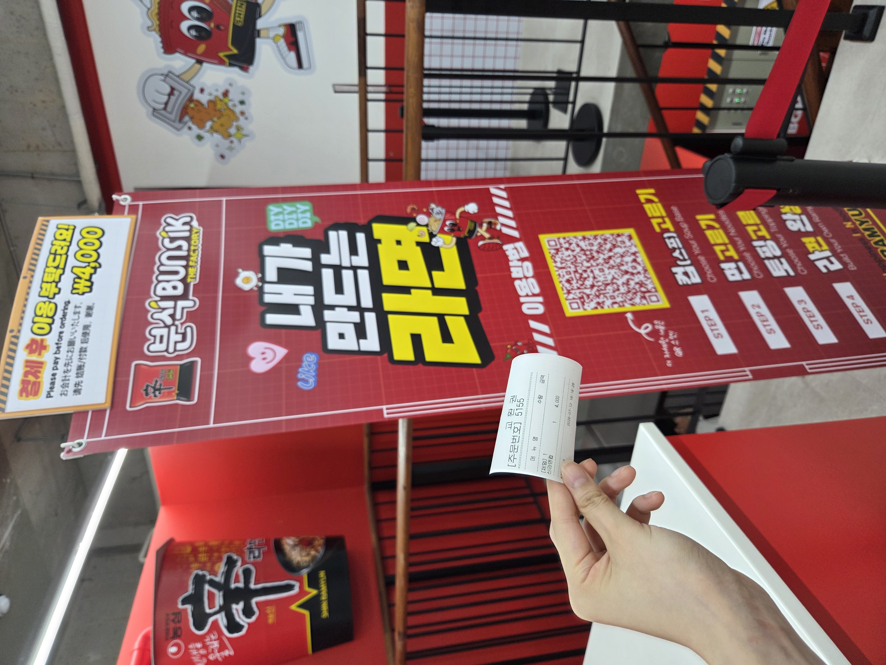
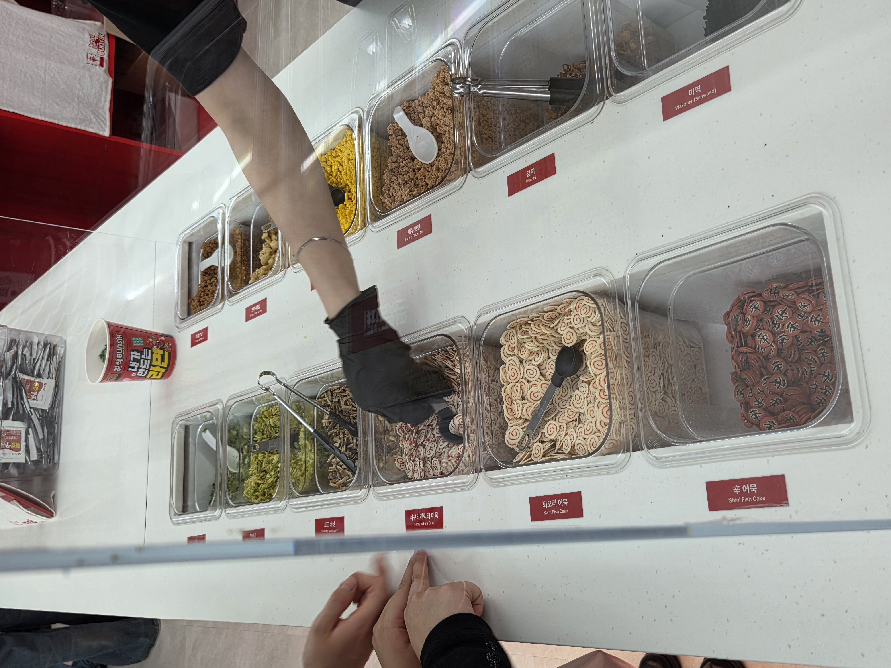
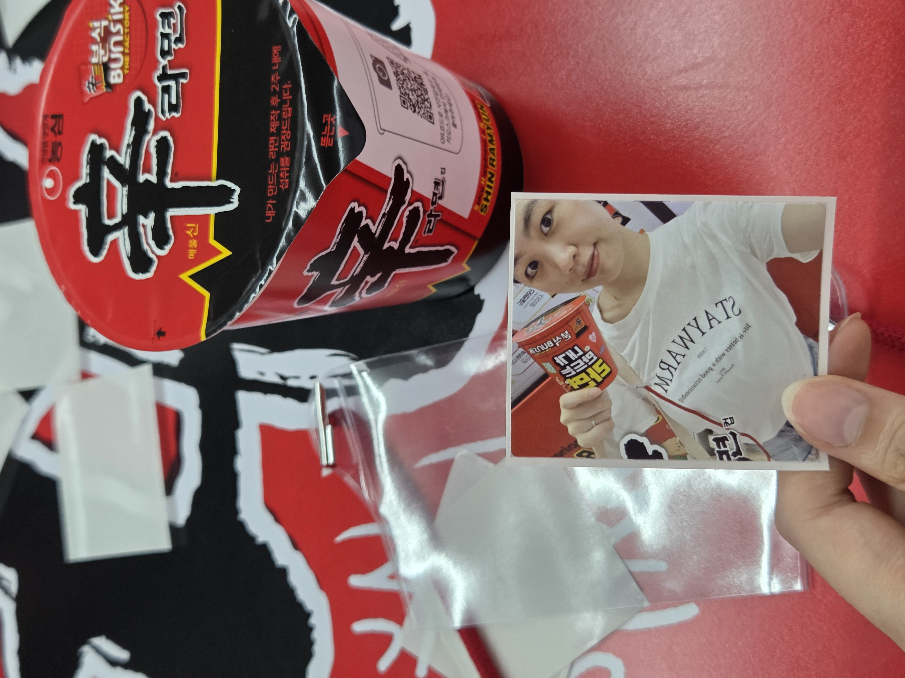
6. 농심 신라면분식 더 팩토리
대세 라면 레시피를 바탕으로 현장에서 직접 조리해 주는 뜨끈한 툼바 라면 식사가 가능했다. 평소 국내 마트나 소매점에서는 절대 찾아볼 수 없고, 오직 해외 수출용 및 기획 라인으로 특수 제작된 한정 라면 라인업들이 전시되어 있어서 구경하는 재미가 매우 신기했다. 4,000원을 결제한 후 모니터에서 어묵, 특산스프 등 다양한 DIY 토핑을 기호대로 고른 다음, 즉석 부스에서 촬영한 내 실물 사진이 프린팅된 대형 스티커를 부착한 "세상에 하나뿐인 컵라면"을 기획했다.
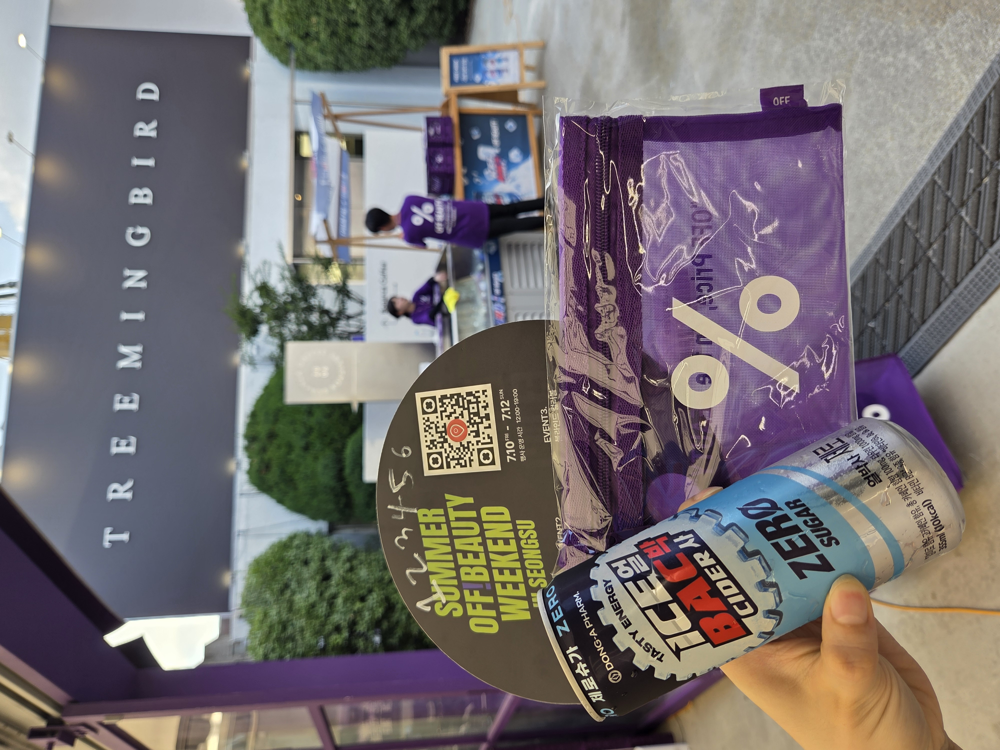
7. 오프뷰티 성수메가팩토리점
핑크색 설비로 웅장하게 도배된 거점 매장이다. 인스타 팔로우와 구역 미션을 완수했다. 덥고 습한 날씨에 팝업 대기와 팝업 간 이동으로 덥고 목이 마르던 찰나, 감사한 음료 증정 혜택을 마주했다. 얼박사 오리지널과 얼박사 제로 중 가벼운 칼로리의 제로 음료를 초이스해 청량하게 들이켰다. 탄탄한 보라색 메쉬 파우치를 받고, 조말론 향수 당첨을 노리며 럭키 드로우에 떨리는 손을 넣어 돌렸으나 최종 마스크팩 무려 10매 무더기 당첨을 확인해 묵직한 마스크팩 팩스택을 손에 쥐었다.
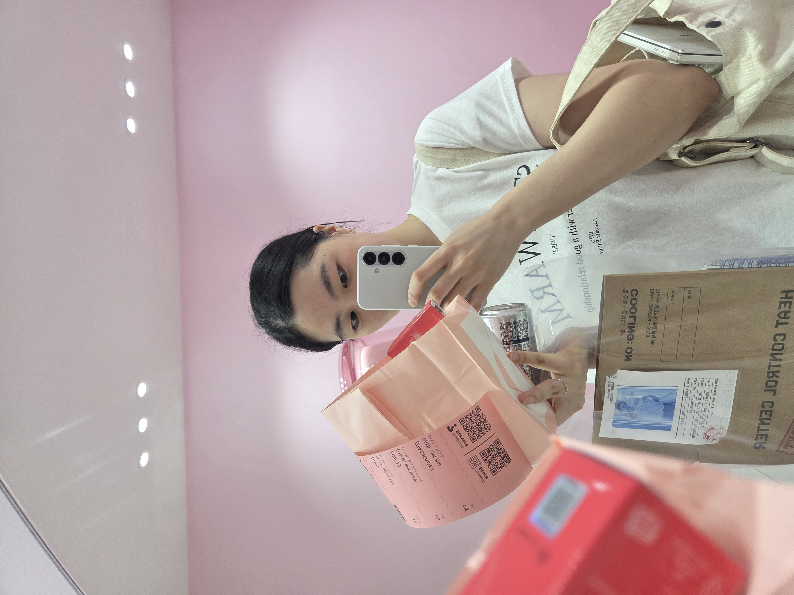
8. 셀퓨전씨 쿨링 팝업스토어
햇빛이 가득한 거리에 서서 약 30분의 대기 끝에 기분 좋은 청량 내부 공간으로 무사 진입했다. 피부 온도 하락과 UV 대처 상식에 관한 O, X 스마트 지식 퀴즈를 맞추고, 내부 미러 포토존에서 시그니처 핑크 종이 가방을 들고 세련된 인증 셀카를 찰칵 남겼다. 야외 야외활동에 최적인 고기능성 쿨 선크림과 미니 패드 샘플 파우치 팩을 알차게 챙기며 효율적인 피부 케어 대책을 완성했다.
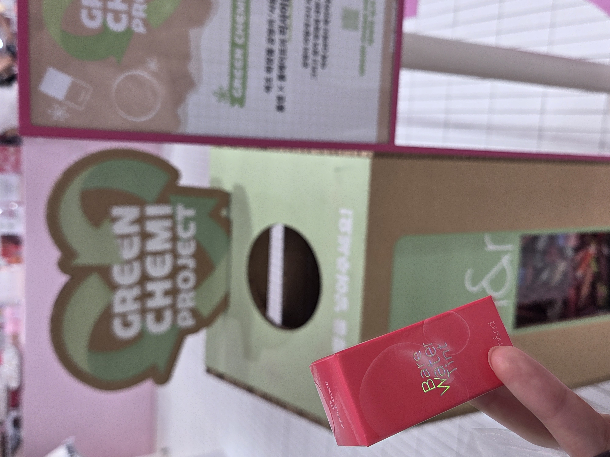
9. 롬앤 핑크오피스 팝업스토어
평소 데일리용으로 롬앤 틴트를 즐겨 썼는데, 마침 딱 맞춰서 쓰던 틴트를 다 썼기 때문에 하나 더 사야 했다. 마침 7/12까지 기획 한정으로 운영되는 공병 리사이클 이벤트가 열려 방문했다. 다 쓴 빈 화장품 플라스틱 공병을 수거함에 흔쾌히 기부하는 친환경 Green Chemi 이벤트에 참여해, 촉촉한 베어 워터 정품 틴트 1개를 무료로 득템하는 기염을 토했다! 더불어 원래 사려던 신상 틴트(10,900원)를 한 개 구매했더니 만 원 이상 구매 기프트 조건이 깔끔하게 충족되어 영롱한 한정판 실버 틴트링까지 덤으로 야무지게 받아왔다. 만족도 최고의 알뜰 쇼핑이었다!
10. 올리브영 뷰티 맨션 성수
성수동 골목 동선을 징검다리 삼아 올리브영 성수 거점 매장들을 효율적으로 딛는 모바일 체크인 랠리였다. 뷰티 맨션 본부를 포함한 지정 올영 매장들에 방문해 휴대폰 NFC 안테나를 가볍게 태깅하면 스마트 스탬프가 신속하게 누적됐다. 이 영리한 로컬 체크인 랠리를 최종 클리어하고, 끈적임 없는 산뜻한 수분막 피팅을 자랑하는 'NAD-PRIZCELL 글로우 필름 마스크 5+1 기획 패키지 정품 세트 박스'를 무사히 품에 안았다.
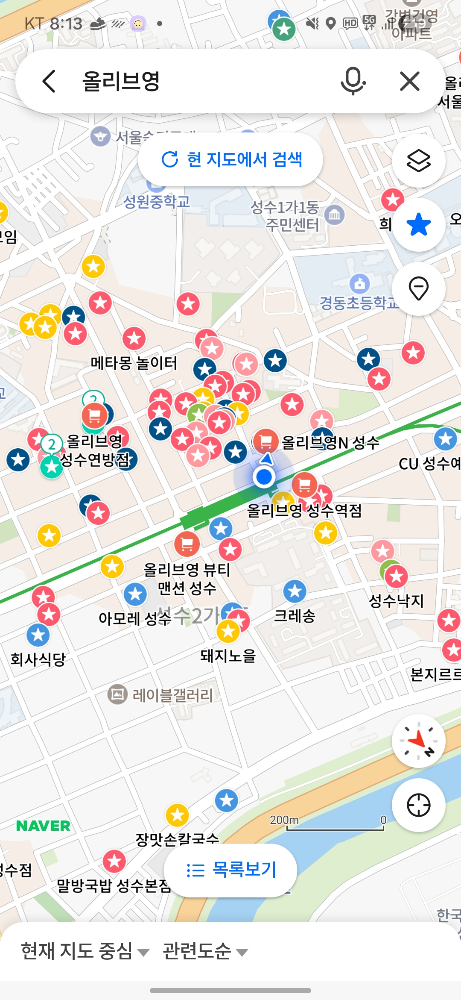
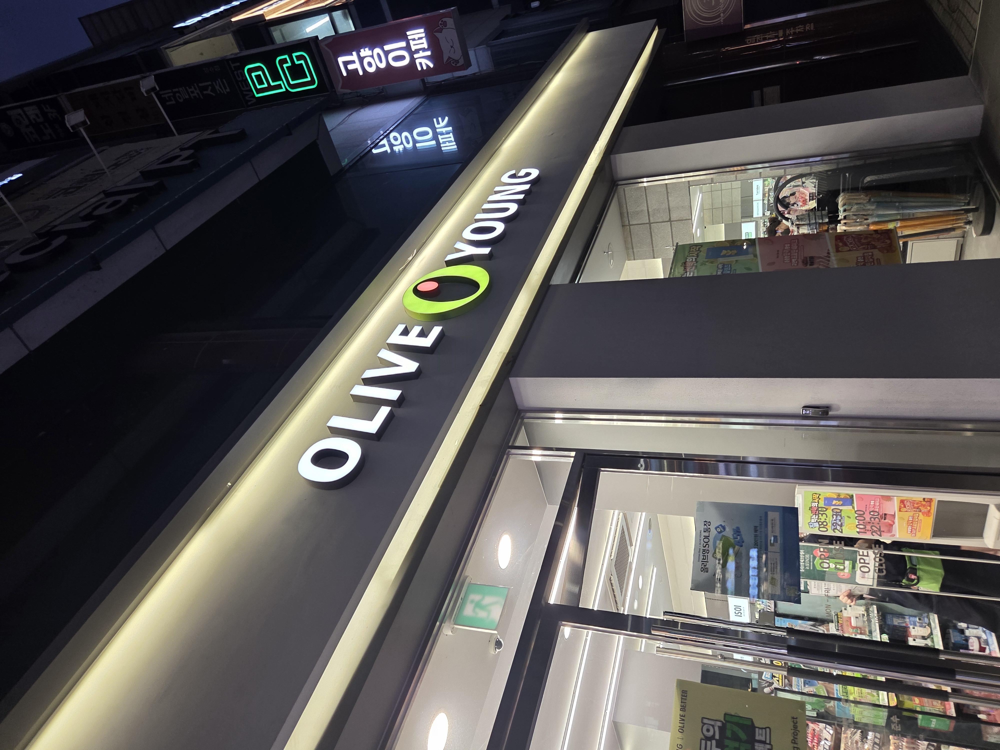
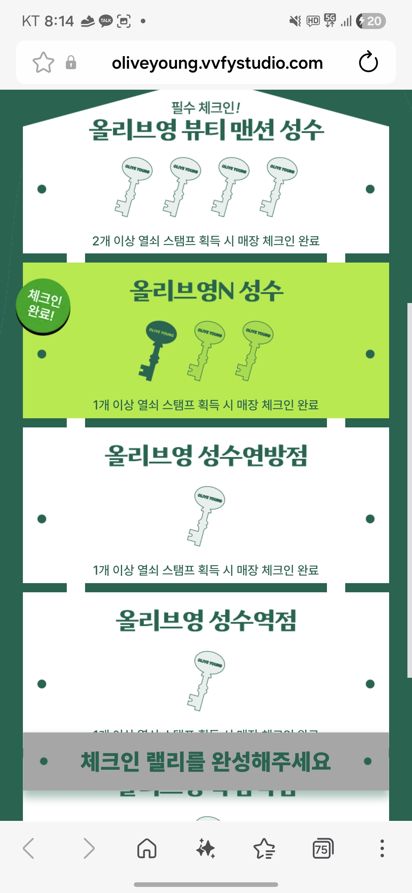

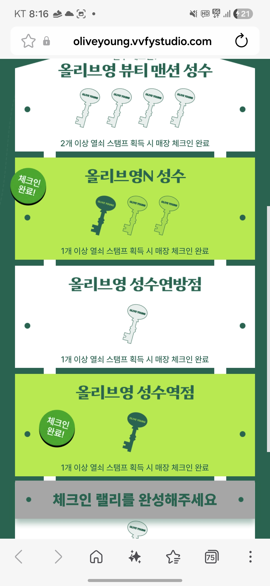
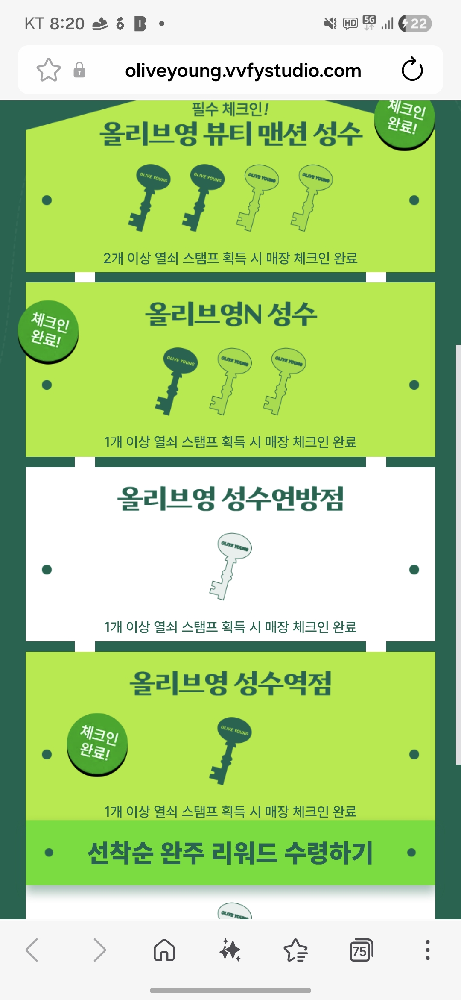
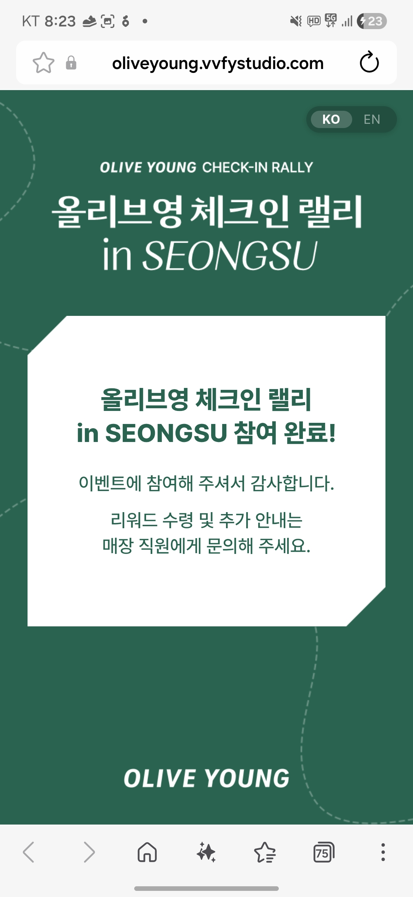